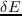
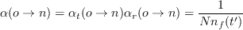
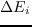

We consider a polypeptide of  amino acids.
Its sequence S is written S =
, where is
the sidechain type of amino acid  .
We assume that each amino acid can take on a few different types ,
, .... that form a set .
For each sequence, there are two classes of structures: folded and unfolded.
For the folded form, all the sequences S share the same, precise geometry for the polypeptide backbone; only the
sidechain positions can vary.
Specifically, the sidechain of each amino acid can explore a few discrete
conformations or rotamers , , ... (around 10 per type ). The folded energy is
The structure of the unfolded form is not specified; the energy is assumed to be independent of the particular unfolded structure, and to have the additive form:
.
We assume that each amino acid can take on a few different types ,
, .... that form a set .
For each sequence, there are two classes of structures: folded and unfolded.
For the folded form, all the sequences S share the same, precise geometry for the polypeptide backbone; only the
sidechain positions can vary.
Specifically, the sidechain of each amino acid can explore a few discrete
conformations or rotamers , , ... (around 10 per type ). The folded energy is
The structure of the unfolded form is not specified; the energy is assumed to be independent of the particular unfolded structure, and to have the additive form:
where is a free energy associated with sidechain type in the unfolded state, and the rightmost form
separates it into an energy component and a conformational entropy term, where  is the thermal energy
and
is the thermal energy
and  is the number of conformations or rotamers available to sidechain type in the unfolded state.
is the number of conformations or rotamers available to sidechain type in the unfolded state.
We perform a Monte Carlo simulation [#!Metropolis53!#,#!FrenkelBK!#] where one copy of the folded protein
is explicitly represented.
The unfolded state is included implicitly, by propagating the simulation with the energy
function
(the folding energy).
One possible elementary MC move is to change a rotamer in the
current folded sequence; the energy change is
.
Another possible move is a mutation: we modify the sidechain type
at a chosen position
in the folded protein, assigning a particular rotamer to the new sidechain.
The energy change is
 measures the stability change due to the mutation (for the given set of rotamers); it is as if we
performed the reverse mutation
in the unfolded form.
measures the stability change due to the mutation (for the given set of rotamers); it is as if we
performed the reverse mutation
in the unfolded form.
If the moves are generated and accepted with an appropriate Metropolis-like scheme, the Markov chain will
visit states according to their Boltzmann probability:
where and the subscript M indicates probabilities sampled by the Markov chain.
For two conformations , of sequence S, the Markov probability ratio is
.For two sequences S, S', the probability ratio is
In the ratio of Markov probabilities, we recognize the ratio of Boltzmann factors for S and S' folding, so that we
have the second equality, where
denotes the folding free energy of sequence S (respectively, S').
Eq. (4.4) has a simple interpretation: the Markov chain, with the chosen energy function
and appropriate move probabilities, leads to the same distribution of states as a macroscopic, equilibrium,
physical system where all sequences S, S', ... are present at equal concentrations, and are distributed between their
folded and unfolded states according to their relative stabilities.
This is exactly the experimental system we want our Markov chain to mimic.
In this interpretation, a MC mutation move S S' amounts to unfolding one copy of S and refolding one copy of S'.
It remains to specify the move generation probabilities and choose an appropriate acceptance scheme [#!Metropolis53!#,#!FrenkelBK!#].
Let
be the probability to select a trial move between two states
o and n and
the probability to accept it. Under weak assumptions, the simulation obeys the so-colled detailed balance condition:
where , are the equilibrium populations of states o and n and
is the probability to make the
move. Detailed balance is guaranteed in the limit of a very long simulation if the move set allows us to connect any two states in the sequence/conformation space (as here), if the system is ``aperiodic'' (there are no series of states that can form “periodic orbits”, trapping the system indefinitely), and if the so-called Kolmogorov reversibility condition is verified (as here): the products of probabilities around closed loops of states are the same in both directions. We cannot prove the aperiodic condition, but it appears very likely and is treated as an assumption.
To produce Boltzmann statistics, we choose the acceptance probabilities [#!Metropolis53!#,#!FrenkelBK!#]:
where
is the o n energy difference.
Notice that this scheme obeys the Kolmogorov reversibility condition.
For a rotamer move at a particular position in the polypeptide chain, of type , we define the move generation
probability as
; all possible choices for
the new rotamer are equiprobable, forward and backward rotamer moves have the same generation probability, and
eq. (4.6) reduces to the simple Metropolis test [#!Metropolis53!#].
For a mutation move at a particular position, we define
as follows:
(a) select a new type with equal probabilities
for all possible types;
(b) choose a rotamer for the new sidechain with equal probabilities
for all possible folded state rotamers.
The overall probability is therefore
The
and
 probabilities are different whenever the old and new sidechain
types have different numbers of possible rotamers.
With these move probabilities, the mutation acceptance
probability can be written:
 |
|
|
(8) |
| |
|
|
(9) |
If the number of rotamers in the folded and unfolded states are the same, , the fraction on the right
will cancel out.
However, the rotamer numbers also appear in the energy change that determines whether the move is
uphill, .
With REMC, several simulations (``replicas'' or ``walkers'') are propagated in parallel, at different temperatures;
periodic swaps are attempted between two walkers's conformations.
The swap is accepted with probability
where , are the inverse temperatures of the two walkers and , 
are the changes in their folding energies, due to the conformation change [#!Kofke02!#,#!Earl05!#].
mignon
2017-11-30